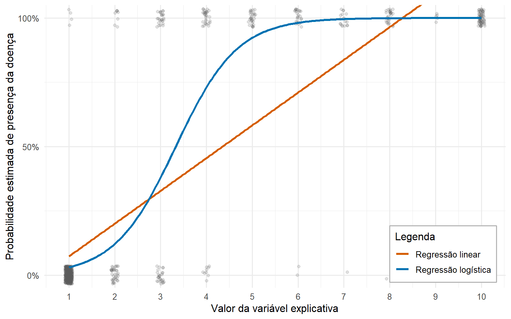
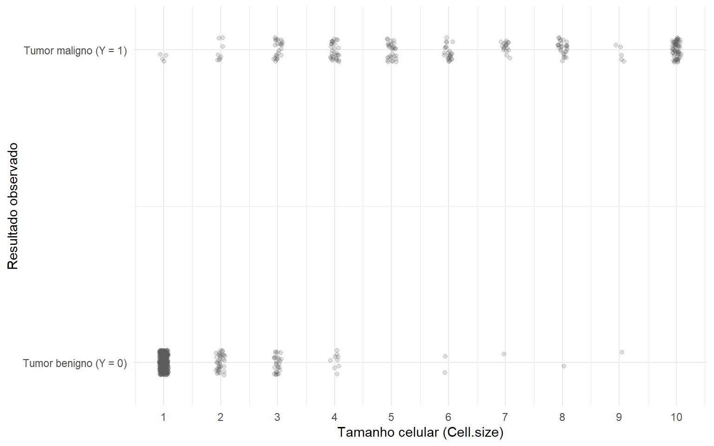
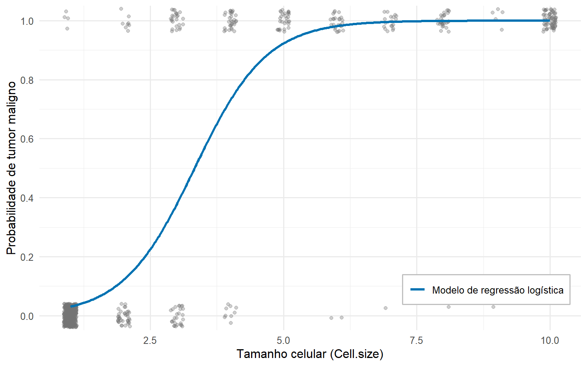
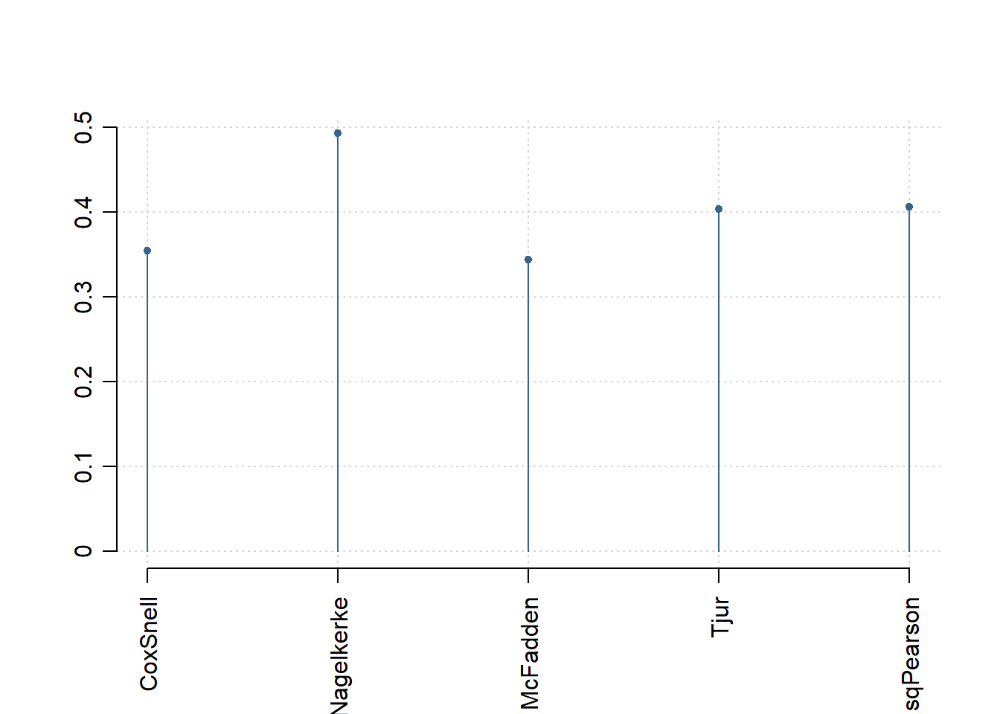
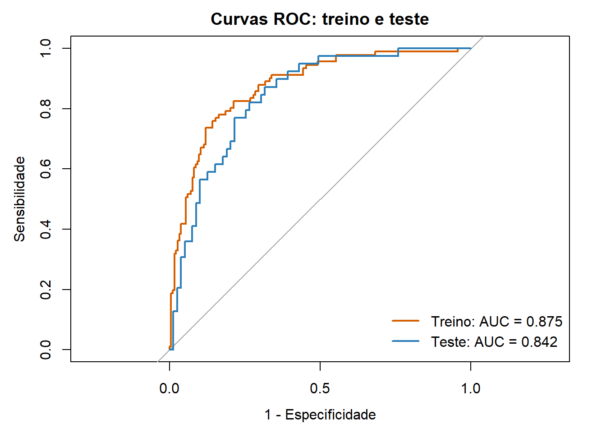

Introdução a Regressão logística: fundamentos e aplicações
GED-16 / PO-216: Análise de Regressão
1 APRESENTAÇÃO
Em muitos problemas de interesse científico, a variável resposta não é contínua. Ela pode indicar, por exemplo, a ocorrência de uma falha (sim ou não), a necessidade de inspeção (sim ou não), a presença de uma doença (presente ou ausente) ou a adesão a um tratamento (sim ou não).
Quando há dois resultados possíveis, a resposta é categórica binária e pode ser representada por uma variável de Bernoulli. Nesses casos, define-se qual resultado representa o evento de interesse (o sucesso) e tem-se:
\[ Y = \begin{cases} 1, & \text{se ocorrer sucesso com probabilidade } p \\ 0, & \text{se ocorrer fracasso com probabilidade } 1 - p \end{cases} \]
Sabemos que a regressão linear modela a média condicional de \(Y\) dado \(x\) em uma reta, \[E(Y\mid X=x)=\beta_0+\beta_1x.\] Como \(Y\) tem distribuição de Bernoulli, essa função média é também a probabilidade de sucesso: \[E(Y\mid X=x)=P(Y=1\mid X=x).\]
A Figura 1.1 apresenta o ajuste de uma regressão linear simples e de uma curva em formato de “S” (Sigmoide), estritamente limitada no eixo vertical entre os valores 0 e 1. Os pontos representam observações e as curvas mostram as probabilidades estimadas pelos dois modelos.
Uma probabilidade precisa estar entre 0 e 1, mas a reta não impõe a restrição para os intervalos, podendo gerar valores inválidos. Além disso, a variância de uma resposta binária depende da probabilidade, enquanto a regressão linear assume variância constante; por isso, seus erros-padrão e testes podem ser inadequados.
Já a curva azul representa uma regressão logística para resposta binária, onde Y=1 indica a presença da doença e Y=0 a sua ausência. Com formato em ‘S’, ela mantém as probabilidades estimadas entre 0 e 1 para garantir estimativas de probabilidade válidas. Assim, valores muito baixos das variáveis preditoras indicam probabilidade quase nula da doença (próximo a 0), enquanto valores muito altos apontam para probabilidade quase certa (próximo a 1), com uma aceleração rápida na região central de transição.
O Capítulo 2 apresenta os fundamentos dos modelos lineares generalizados e da regressão logística. Maiores detalhes sobre os tópicos aqui considerados podem ser vistos nas referências indicadas ao final desse arquivo. Na sequência, o Capítulo 3 ilustra o processo de ajuste e a interpretação de parâmetros por meio de um exemplo prático univariado. Por fim, o Capítulo 4 aprofunda o tema com a análise de uma base de dados sobre diabetes tipo 2, critérios de comparação entre modelos e métricas de desempenho preditivo.
1.1 Objetivos de aprendizagem:
- Compreender a fundamentação teórica do modelo, identificando como se estruturam a distribuição de Bernoulli, o preditor linear e a função de ligação logito.
- Implementar e ajustar modelos de regressão logística no R.
- Interpretar os resultados do modelo, traduzindo coeficientes em termos de chances, razões de chances (odds ratios) e probabilidades estimadas.
- Validar o desempenho e a adequação do modelo ajustado.
2 Regressão logística
A regressão linear usual é formulada para uma resposta quantitativa contínua cujo comportamento condicional é descrito por uma distribuição normal, com variância constante. Essa formulação não é adequada para uma resposta binária (\(0/1\)), uma vez que a natureza discreta dos dados gera resíduos sem distribuição normal e com variância não-constante (heteroscedasticidade). Além disso, para uma resposta com distribuição de Bernoulli, a variância não é constante, pois depende diretamente da probabilidade estimada através de \(\operatorname{Var}(Y_i\mid\mathbf{x}_i)=\pi_i(1-\pi_i)\).
Para contornar essas limitações, utiliza-se uma classe mais ampla de modelos, denominada Modelos Lineares Generalizados (MLG), que permite acomodar diferentes distribuições para a variável resposta e relacionar sua média a um preditor linear por meio de funções de ligação apropriadas. A regressão logística é um caso particular dessa classe de modelos.
2.1 Modelos Lineares Generalizados
Os modelos lineares generalizados ampliam a estrutura da regressão ao permitir distribuições da resposta apropriadas ao problema e uma função de ligação que conecta sua média condicional a um preditor linear. Assim, mantemos uma combinação linear das covariáveis na escala do preditor, mas podemos modelar médias que respeitam o espaço de valores da resposta. De forma geral, a estrutura de um MLG pode ser escrita como
\[ Y_i\mid\mathbf{x}_i \sim \mathcal{F}(\mu_i,\phi), \qquad g(\mu_i)=\eta_i=\beta_0+\sum_{j=1}^{p}\beta_jx_{ij}. \]
Nessa expressão, \(\mathcal{F}\) representa a distribuição da resposta, \(\mu_i=E(Y_i\mid\mathbf{x}_i)\) é sua média condicional, \(\phi\) representa um parâmetro de dispersão quando necessário, \(g\) é a função de ligação e \(\eta_i\) é o preditor linear, formado pelas variáveis explicativas \(x_{ij}\) e pelos parâmetros \(\beta_j\).
Na regressão logística, a variável resposta é binária e segue uma distribuição de Bernoulli (caso particular da distribuição binomial) e a função de ligação mais utilizada é o logito. Embora a variável resposta seja categórica, as variáveis explicativas podem ser contínuas, categóricas ou mistas.
Por exemplo, na regressão logística é perfeitamente natural modelar \(P(Doenca=="Sim")\) a partir das covariáveis idade (quantitativa), pressão arterial (quantitativa), sexo (categórica).
NotaObservação
A ligação logito é a mais utilizada para variáveis resposta binárias, mas não é a única opção. Outras funções de ligação também podem ser empregadas para variáveis resposta binárias:
- probit: assume que a probabilidade de sucesso está associada à função de distribuição acumulada da normal padrão. É frequentemente utilizado quando existe uma justificativa teórica para supor a presença de uma variável latente com comportamento aproximadamente normal, como em estudos de aptidão, preferência ou propensão à escolha.
- complementary log-log (cloglog): produz uma relação assimétrica entre a probabilidade e o preditor linear, sendo particularmente útil quando eventos raros são de interesse, como a ocorrência de falhas em equipamentos ou o desenvolvimento de uma determinada doença em uma população.
2.1.1 Estrutura dos modelos lineares generalizados
Um MLG reúne três elementos:
o componente aleatório, que especifica a distribuição condicional da resposta;
o componente sistemático, o preditor linear que combina as variáveis explicativas em \[\eta_i=\beta_0+\beta_1x_{i1}+\cdots+\beta_px_{ip};\] e
a função de ligação, que relaciona a média condicional da resposta \(\mu_i=E(Y_i\mid\mathbf{x}_i)\) ao preditor linear por \(g(\mu_i)=\eta_i\).
A Tabela Tabela 2.1 contrasta esses elementos em três modelos de uso frequente.
| Modelo | Componente aleatório | Componente sistemático | Função de ligação | Tipo de resposta |
|---|---|---|---|---|
| Regressão linear normal | \(Y_i\mid\mathbf{x}_i\sim N(\mu_i,\sigma^2)\) | \(\eta_i=\mathbf{x}_i^\mathsf{T}\boldsymbol\beta\) | Identidade: \(\mu_i=\eta_i\) |
Quantitativa contínua |
| Regressão logística binária | \(Y_i\mid\mathbf{x}_i\sim\operatorname{Bernoulli}(\pi_i)\) | \(\eta_i=\mathbf{x}_i^\mathsf{T}\boldsymbol\beta\) | Logito: \(\log\left(\frac{\pi_i}{1-\pi_i}\right)=\eta_i\) |
Binária |
| Regressão de Poisson | \(Y_i\mid\mathbf{x}_i\sim\operatorname{Poisson}(\mu_i)\) | \(\eta_i=\mathbf{x}_i^\mathsf{T}\boldsymbol\beta\) | Logarítmica: \(\log(\mu_i)=\eta_i\) |
Contagem |
O termo “linear” refere-se à forma linear do preditor linear \(\eta_i\) nos parâmetros \(\boldsymbol\beta\), mas a média da resposta não precisa ser uma função linear das covariáveis. Isso não exige que as variáveis explicativas sejam categóricas quando a resposta é categórica: elas podem ser quantitativas, categóricas ou de ambos os tipos.
NotaRespostas com mais de duas categorias
Quando a resposta tem três ou mais categorias, a especificação depende de serem nominais ou ordenadas. Modelos de logitos de categorias de referência são usados para respostas nominais e modelos de logitos cumulativos, por exemplo, podem aproveitar a ordenação de uma resposta ordinal. Essas extensões não serão desenvolvidas nesta aula, cujo foco é a resposta binária.
2.2 Regressão logística binária
Seja \(Y_i\) o indicador do evento de interesse para a observação \(i\), com \(Y_i=1\) se o evento ocorre e \(Y_i=0\) caso contrário. Condicionalmente às covariáveis \(\mathbf{x}_i\), assume-se que
\[ Y_i\mid\mathbf{x}_i \sim \operatorname{Bernoulli}(\pi_i), \qquad \pi_i = P(Y_i=1\mid\mathbf{x}_i). \]
Como a média condicional é \(E(Y_i\mid\mathbf{x}_i)=\pi_i\) e a variância é \(\operatorname{Var}(Y_i\mid\mathbf{x}_i)=\pi_i(1-\pi_i)\), a variância depende da média. Essa característica afasta o modelo da estrutura linear clássica com variância constante (homocedástica).
Para modelar essa probabilidade em função das covariáveis, utiliza-se a ligação logito. As covariáveis podem ser quantitativas, categóricas ou de ambos os tipos.
A função da ligação logito é transformar os valores de \(\pi\), restritos ao intervalo \((0,1)\), no conjunto dos números reais (\(\mathbb{R}\)), ao definir o logaritmo das chances do evento como uma combinação linear das variáveis explicativas (covariáveis):
\[ \operatorname{logit}(\pi_i) =\log\left(\frac{\pi_i}{1-\pi_i}\right) =\beta_0+\beta_1x_{i1}+\cdots+\beta_px_{ip}=\eta_i. \]
Ao isolar \(\pi _{i}\) na equação acima, obtemos a probabilidade estimada por meio da função logística: \[ \pi_i=\frac{1}{1+e^{-(\beta_0+\beta_1x+ \cdots+\beta_px)}}.\]
Essa transformação garante \(0<\pi_i<1\) para qualquer valor finito do preditor. Portanto, o log das chances permite modelar uma relação linear sem deixar que as probabilidades previstas saiam do intervalo válido, além de se adequar à estrutura de resposta binária.
NotaComo a ligação logito transforma os valores de \(\pi\) para números \(\mathbb{R}\)?
A probabilidade está limitada ao intervalo \((0,1)\), enquanto o preditor linear \(\eta_i\) pode assumir qualquer valor real. A ligação logito permite relacionar essas duas escalas por meio de duas etapas.
1. Da probabilidade para a chance. Para uma probabilidade \(\pi_i\), a chance do evento é
\[ \operatorname{odds}_i=\frac{\pi_i}{1-\pi_i}. \]
Como \(0<\pi_i<1\), essa chance é positiva e pode assumir qualquer valor em \((0,+\infty)\).
Por exemplo, se \(\pi_i=0{,}20\), a chance é \(0{,}20/0{,}80=0{,}25\). Se \(\pi_i=0{,}50\), a chance é \(1\) e, se \(\pi_i=0{,}80\), é \(4\).
2. Da chance para o logito. Aplicamos o logaritmo natural à chance:
\[ \operatorname{logit}(\pi_i)=\log\left(\frac{\pi_i}{1-\pi_i}\right). \] O logaritmo transforma valores positivos em números reais, de modo que a função logito estabelece uma correspondência entre probabilidades em \((0,1)\) e valores em \(\mathbb{R}\). Em particular, \(\operatorname{logit}(\pi_i=0,5)=0\), tende a \(-\infty\) quando \(\pi_i → 0\) e a \(\infty\) quando \(\pi_i → 1\).
Portanto, \(\operatorname{logit}\) é estritamente crescente e estabelece uma correspondência um a um entre \((0,1)\) e \(\mathbb{R}\).
Explore a transformação: mova o controle para alterar o preditor linear e acompanhar a probabilidade, a chance e o logito correspondentes.
Probabilidade
0,50
0,50
Chance
1,00
1,00
Logito
0,00
0,00
DicaEntendendo os conceitos Chance e Razão de Chances
Imagine que observamos dez partidas de cada um dos dois grupos, A e B. O grupo A venceu oito de dez partidas associadas a ele. O grupo B venceu quatro das 10 partidas que ele jogou. Os grupos representam conjuntos distintos de partidas, não se enfrentando na mesma partida.
Probabilidade observada. É a proporção de partidas com vitória no grupo:
\[ P_A=\frac{8}{10}=0{,}80, \qquad P_B=\frac{4}{10}=0{,}40. \]
Chance (odds). É a razão entre a probabilidade de vitória e a probabilidade de não vitória:
\[ \operatorname{odds}_A=\frac{0{,}80}{1-0{,}80}=\frac{0{,}80}{0{,}20}=4, \qquad \operatorname{odds}_B=\frac{0{,}40}{1-0{,}40}=\frac{0{,}40}{0{,}60}\approx0{,}67. \] Assim, as chances de vitória são 4 para 1 no grupo A e aproximadamente 0,67 para 1 no grupo B.
Razão de Chances (odds ratio, OR). Compara as chances dos dois grupos:
\[ OR=\frac{\operatorname{odds}_A}{\operatorname{odds}_B} =\frac{4}{0{,}67}\approx6. \] Assim, embora a probabilidade de vitória da Equipe A seja apenas duas vezes maior que a da Equipe B (\(0,80/0,40=2\)), a chance de vitória no grupo A é aproximadamente seis vezes maior do que a do B.
Essa interpretação em termos de razão de chances é fundamental na regressão logística, pois os coeficientes do modelo são frequentemente interpretados por meio de seus exponenciais, \(e^{\beta_j}\).
E como interpreto os coeficientes??
Analisando o resultado obtido no logito, \[ \log\left(\frac{\pi_i}{1-\pi_i}\right) =\beta_0+\beta_1x_{i1}+\cdots+\beta_px_{ip}=\eta_i, \] o coeficiente estimado \(\hat {\beta_j}\) corresponde à mudança esperada na escala de logaritmo das chances de ocorrência do evento de interesse associada a um incremento unitário em \(x_j\), mantendo-se constantes as demais covariáveis do modelo.
- Para uma variável quantitativa \(x_j\), um aumento de uma unidade multiplica as chances por \(\exp(\beta_j)\).
- Para uma variável categórica, a razão de chances compara um nível com a categoria de referência.
A variação na chance (odds) é multiplicativa e constante, mas a variação na probabilidade vai sempre depender dos valores das outras covariáveis, pois \[ \pi_i=\frac{1}{1+e^{-\eta_i}}.\]
2.3 Estimação dos parâmetros no glm()
O ajuste de um MLG é determinado pelas estimativas dos parâmetros \(\hat{\boldsymbol \beta}\). Na regressão linear normal, os estimadores de máxima verossimilhança dos coeficientes coincidem com os estimadores de mínimos quadrados e podem ser obtidos por uma expressão fechada. Na regressão logística, as equações que determinam os coeficientes dependem da função logística e, em geral, não podem ser resolvidas isolando cada parâmetro em uma fórmula algébrica. Nesta apostila, considera-se o método de máxima verossimilhança (MV) para estimar os parâmetros lineares \(\beta_1, \ldots, \beta_p\) do modelo, que tem muitas propriedades ótimas, tais como, consistência e eficiência assintótica.
Sob independência condicional, a verossimilhança das respostas Bernoulli observadas é
\[ L(\boldsymbol\beta; \boldsymbol y) =\prod_{i=1}^n \pi_i^{y_i}(1-\pi_i)^{1-y_i}, \]
em que \(\boldsymbol\beta=(\beta_1, \ldots, \beta_p)\) é o vetor de parâmetros e \(\mathbf{y}=(y_1,\ldots,y_n)\) representa o conjunto de observações. E sua log-verossimilhança é
\[ \ell(\boldsymbol\beta; \boldsymbol y) =\ell(\boldsymbol \beta)=\sum_{i=1}^n\left[y_i\log(\pi_i)+(1-y_i)\log(1-\pi_i)\right]. \] Reorganizando os termos matematicamente, ela também pode ser representada isolando a razão de chances: \[\ell(\boldsymbol\beta; \boldsymbol y)=\sum _{i=1}^{n}\left[y_{i}\log \left(\frac{\pi _{i}}{1-\pi _{i}}\right)+\log (1-\pi _{i})\right].\] Em geral, as equações resultantes do método de máxima verossimilhança não possuem solução analítica fechada, os parâmetros \(\mathbfit{\beta }\) são estimados numericamente por meio de processos iterativos, como o método de Newton-Raphson (ou Iteratively Reweighted Least Squares - IRLS). No modelo logístico, esse algoritmo apresenta convergência rápida e estável, exceto em cenários de separação perfeita dos dados, nos quais as probabilidades estimadas colapsam exatamente em zero ou um, impedindo a convergência dos coeficientes. Maiores detalhes sobre o processo de estimação podem ser obtidos em Cordeiro & Demétrio (2008).
No R, usamos a função glm(..., family = binomial), que por default usa o algoritmo IWLS (iteratively weighted least squares) para encontrar o máximo da verossimilhança, atualizando as estimativas até convergir ou atingir o limite computacional. Os valores iniciais necessários são definidos automaticamente pelo software. Porém, o argumento start permite fornecer valores iniciais para os coeficientes quando houver uma razão específica para fazê-lo, mas não garante convergência.
Após o ajuste, modelo$converged indica se houve convergência e modelo$iter informa o número de iterações. A documentação sobre glm() e seus argumentos estão descritos em documentação de glm().
3 EXEMPLO 1 (Breast Cancer Wisconsin)
Considere um estudo sobre câncer de mama em que se deseja modelar a probabilidade de um tumor mamário ser maligno. O conjunto Breast Cancer Wisconsin reúne 699 observações e registra duas classes para lesões mamárias: benign (benigno) ou malignant (maligno). A base, disponibilizada pelo repositório UCI e incluída no pacote mlbench do R, contém características celulares e a classe atribuída a cada observação.
A variável resposta indica se o tumor mamário é benigno ou maligno e será definida por
\[ Y_i=\begin{cases} 1, & \text{tumor maligno},\\ 0, & \text{tumor benigno}. \end{cases} \]
Seja \(\pi_i=P(Y_i=1\mid \text{Cell.size}_i)\) a probabilidade de o \(i\)-ésimo tumor ser maligno. Neste exemplo, usaremos como variável independente apenas Cell.size, uma característica celular registrada em uma escala ordinal de 1 a 10. Para este exercício, trataremos essa escala numericamente, supondo que um aumento de um ponto tenha a mesma associação com o logito.
3.1 Leitura da base de dados
O código define \(Y=1\) para tumor maligno e \(Y=0\) para tumor benigno. Se houver observações sem valor registrado em Cell.size, elas serão excluídas desta análise.
library(tidyverse)
data("BreastCancer", package = "mlbench", envir = .GlobalEnv)
bc <- as_tibble(BreastCancer) |>
transmute(
Y = as.integer(Class == "malignant"),
Cell.size = as.numeric(as.character(Cell.size))
) |>
drop_na()
glimpse(bc)Rows: 699
Columns: 2
$ Y <int> 0, 0, 0, 0, 0, 1, 0, 0, 0, 0, 0, 0, 1, 0, 1, 1, 0, 0, 1, 0, …
$ Cell.size <dbl> 1, 4, 1, 8, 1, 10, 1, 1, 1, 2, 1, 1, 3, 1, 7, 4, 1, 1, 7, 1,…bc |>
count(Y, name = "n") |>
mutate(resultado = if_else(Y == 1, "Tumor maligno", "Tumor benigno"),
proporcao = n / sum(n))# A tibble: 2 × 4
Y n resultado proporcao
<int> <int> <chr> <dbl>
1 0 458 Tumor benigno 0.655
2 1 241 Tumor maligno 0.3453.2 Dispersão dos dados
Como \(Y\) é binária, os pontos se concentram em 0 e 1. geom_jitter() aplica um pequeno deslocamento apenas para facilitar a visualização, para efeito de análise os valores observados de \(Y\) não são alterados.
ggplot(bc, aes(x = Cell.size, y = Y)) +
geom_jitter(width = 0.08, height = 0.04, alpha = 0.2, color = "grey35") +
scale_x_continuous(breaks = 1:10) +
scale_y_continuous(
breaks = c(0, 1),
labels = c("Tumor benigno (Y = 0)", "Tumor maligno (Y = 1)")
) +
coord_cartesian(ylim = c(-0.08, 1.08)) +
labs(
x = "Tamanho celular (Cell.size)",
y = "Resultado observado"
) +
theme_minimal()
3.3 Ajuste do modelo logístico simples
O modelo permite estimar a probabilidade de o tumor ser maligno em função do valor de Cell.size:
\[ \log\left(\frac{\pi_i}{1-\pi_i}\right) =\beta_0+\beta_1\,\text{Cell.size}_i. \]
bc_modelo <- glm(Y ~ Cell.size, family = binomial(link = "logit"), data = bc)
summary(bc_modelo)
Call:
glm(formula = Y ~ Cell.size, family = binomial(link = "logit"),
data = bc)
Coefficients:
Estimate Std. Error z value Pr(>|z|)
(Intercept) -4.960 0.360 -13.78 <2e-16 ***
Cell.size 1.489 0.121 12.30 <2e-16 ***
---
Signif. codes: 0 '***' 0.001 '**' 0.01 '*' 0.05 '.' 0.1 ' ' 1
(Dispersion parameter for binomial family taken to be 1)
Null deviance: 900.53 on 698 degrees of freedom
Residual deviance: 275.55 on 697 degrees of freedom
AIC: 279.55
Number of Fisher Scoring iterations: 7A saída de summary() apresenta os coeficientes, o erro-padrão, o teste de Wald e o valor-p do coeficiente. Ao nível de significância de \(5\%\), há evidência estatística para a rejeição de \(H_0:\beta_1=0\). Para o intercepto, o teste também foi significativo \(p<0{,}001\)), levando à rejeição de \(H_0:\beta_0=0\).
bc_nulo <- glm(Y ~ 1, family = binomial(link = "logit"), data = bc)
# Teste da razão de verossimilhanças
anova(bc_nulo, bc_modelo)Analysis of Deviance Table
Model 1: Y ~ 1
Model 2: Y ~ Cell.size
Resid. Df Resid. Dev Df Deviance Pr(>Chi)
1 698 900.53
2 697 275.55 1 624.97 < 2.2e-16 ***
---
Signif. codes: 0 '***' 0.001 '**' 0.01 '*' 0.05 '.' 0.1 ' ' 1A função anova() comparou o modelo nulo, que tem apenas intercepto, com o modelo que inclui cell_size. Como os modelos são binomiais, aninhados e ajustados às mesmas observações, aplicou-se o teste da análise de deviance e, pelo seu resultado, incluir a variável cell_size faz sentido para nossa análise.
bc_curva <- data.frame(
Cell.size = seq(min(bc$Cell.size, na.rm = TRUE),
max(bc$Cell.size, na.rm = TRUE), length.out = 400)
)
bc_curva$probabilidade <- predict(
bc_modelo, newdata = bc_curva, type = "response"
)
ggplot2::ggplot(bc, ggplot2::aes(x = Cell.size, y = Y)) +
ggplot2::geom_jitter(
width = 0.12, height = 0.04, alpha = 0.35,
color = "grey45"
) +
ggplot2::geom_line(
data = bc_curva,
ggplot2::aes(
x = Cell.size, y = probabilidade,
color = "Modelo de regressão logística"
),
linewidth = 1.2
) +
ggplot2::scale_color_manual(
values = c("Modelo de regressão logística" = "#0072B2"),
name = NULL
) +
ggplot2::scale_y_continuous(breaks = seq(0, 1, by = 0.2)) +
ggplot2::coord_cartesian(ylim = c(0, 1)) +
ggplot2::labs(
x = "Tamanho celular (Cell.size)",
y = "Probabilidade de tumor maligno"
) +
ggplot2::theme_minimal(base_size = 12) +
ggplot2::theme(
legend.position = c(0.98, 0.08),
legend.justification = c(1, 0),
legend.background = ggplot2::element_rect(
fill = "white", color = "grey75"
)
)
Para dar continuidade ao exercício didático, trataremos bc_modelo como um ajuste provisoriamente adequado para interpretar seus parâmetros. Ainda não examinamos resíduos nem outras ferramentas de diagnóstico, que deveria fazer parte de uma análise completa, mas ficará fora desta etapa introdutória.
3.4 Coeficiente, chances e razão de chances
A função de ligação estimada do modelo é:
\[ \widehat{\operatorname{logit}}(\pi_i)= -4{,}960 + 1{,}489\,\text{Cell.size}_i. \] Interpretação do intercepto
A estimativa do intercepto \(\hat\beta_0=-4,960\) representa o logaritmo das chances de malignidade quando \(Cell.size=0\).
Como o valor zero não pertence ao domínio observado de Cell.size, o intercepto possui pouca interpretação prática e sua principal função é ajustar a posição da curva logística.
Interpretação do coeficiente de Cell.size
A estimativa de \(\hat\beta_1\) descreve a variação no logaritmo das chances de um tumor ser maligno associada a um aumento de uma unidade em Cell.size. Como a estimativa é positiva, temos que a cada aumento de uma unidade em Cell.size, o logaritmo das chances de o tumor ser maligno aumenta em 1,489 unidades. Com isso, valores mais altos na pontuação de uniformidade do tamanho celular estão associados a maiores chances de o tumor ser maligno.
Entretanto, essa interpretação é realizada na escala do logito, que não possui significado intuitivo para a maioria das aplicações. Por esse motivo, costuma-se trabalhar com a exponencial do coeficiente para obtenção da razão de chances (OR).
Interpretação da razão de chances
No R, a razão de chances pode ser calculada por:
exp(coef(bc_modelo))(Intercept) Cell.size
0.007011619 4.431374991 Logo, \[OR= e^{\widehat\beta_1}= 4,43.\] Portanto, a cada aumento de uma unidade em Cell.size, as chances de o tumor ser maligno são multiplicadas por 4.43. Ou, equivalentemente, a cada aumento de uma unidade em Cell.size, as chances de malignidade aumentam aproximadamente \(343\%\). Esse valor se refere às chances, não a um aumento igual na probabilidade.
Abaixo, temos o valor do IC 95% para os coeficientes do modelo.
#IC95% OR
exp(confint(bc_modelo)) 2.5 % 97.5 %
(Intercept) 0.003285838 0.01355924
Cell.size 3.546947353 5.70852632Se o intervalo para \(\beta_1\) incluir 1, podemos inferir que os dados não fornecem evidência suficiente de associação por Cell.size, ao nível de 5% de significância.
3.5 Comparação entre tumores com diferentes Cell.size
A tabela reúne, para cada tamanho celular, o logito estimado, a chance (odds) de malignidade, a probabilidade estimada e a razão de chances (OR) ao comparar esse valor de Cell.size com o valor uma unidade maior.
# A tibble: 5 × 5
Cell.size `Logito estimado` Chance `P(tumor maligno)` `OR (x para x + 1)`
<dbl> <dbl> <dbl> <dbl> <dbl>
1 2 -1.98 0.138 0.121 4.43
2 3 -0.494 0.61 0.379 4.43
3 4 0.995 2.70 0.73 4.43
4 7 5.46 235. 0.996 4.43
5 8 6.95 1043. 0.999 4.43A chance (odds) descreve, para cada valor de Cell.size, a razão entre a probabilidade de malignidade e a probabilidade de benignidade.
A OR de x para x + 1 compara as chances de dois valores consecutivos de Cell.size e, neste modelo, ela é constante \((OR=4.43)\). Observe que a \(OR\) não é uma razão entre probabilidades. Embora a \(OR\) por aumento de uma unidade seja a mesma, a mudança na probabilidade depende do valor inicial de Cell.size. Por exemplo, na tabela, a probabilidade estimada aumenta:
- 25.8 pontos percentuais quando
Cell.sizepassa de 2 para 3; - 0.3 ponto percentual quando
Cell.sizepassa de 7 para 8.
Nota
Esse exemplo foi ilustrativo para entender o ajuste de um Regressão Logística. A variável Cell.size é ordinal, mas foi tratado numericamente e o modelo ajustado incluiu apenas esse preditor. As associações estimadas não demonstram causalidade, nem foi avaliado o desempenho em novos casos.
4 EXEMPLO 2 (Regressão Logística Múltipla)
Depois de estudar o modelo com um único preditor, passamos à regressão logística múltipla. A resposta continua binária, mas consideraremos várias características simultaneamente para estimar a probabilidade de ocorrência do resultado de interesse.
Neste exemplo, utilizaremos a base PimaIndiansDiabetes2, do pacote mlbench do R, que contém informações de saúde de mulheres da etnia Pima. O objetivo é investigar a associação de características como idade, índice de massa corporal (IMC) e pressão arterial com a presença de diabetes, estimando o efeito de cada variável ajustado pelas demais e a probabilidade de um diagnóstico positivo.
library(mlbench)
library(tidyverse)
# Importando a base de dados
data(PimaIndiansDiabetes2)
da_diabetes <- na.omit(PimaIndiansDiabetes2)
glimpse(da_diabetes)Rows: 392
Columns: 9
$ pregnant <dbl> 1, 0, 3, 2, 1, 5, 0, 1, 1, 3, 11, 10, 1, 13, 3, 3, 4, 4, 3, 9…
$ glucose <dbl> 89, 137, 78, 197, 189, 166, 118, 103, 115, 126, 143, 125, 97,…
$ pressure <dbl> 66, 40, 50, 70, 60, 72, 84, 30, 70, 88, 94, 70, 66, 82, 76, 5…
$ triceps <dbl> 23, 35, 32, 45, 23, 19, 47, 38, 30, 41, 33, 26, 15, 19, 36, 1…
$ insulin <dbl> 94, 168, 88, 543, 846, 175, 230, 83, 96, 235, 146, 115, 140, …
$ mass <dbl> 28.1, 43.1, 31.0, 30.5, 30.1, 25.8, 45.8, 43.3, 34.6, 39.3, 3…
$ pedigree <dbl> 0.167, 2.288, 0.248, 0.158, 0.398, 0.587, 0.551, 0.183, 0.529…
$ age <dbl> 21, 33, 26, 53, 59, 51, 31, 33, 32, 27, 51, 41, 22, 57, 28, 2…
$ diabetes <fct> neg, pos, pos, pos, pos, pos, pos, neg, pos, neg, pos, pos, n…Temos as seguintes variáveis disponíveis:
pregnant: Número de vezes que a mulher esteve grávidaglucose: Glicose plasmática em teste de 2h de tolerância à glicose (mg/dL)pressure: Pressão arterial diastólica (mmHg)triceps: Espessura da dobra cutânea do tríceps (mm)insulin: Nível sérico de insulina (μU/mL)mass: Índice de Massa Corporal (IMC)pedigree: Histórico familiar de diabetes (score genético)age: Idade da paciente (anos)diabetes: Desfecho binário: pos (diabética) ou neg (não diabética)
# Criando faixas etárias
da_diabetes$age_cat <- cut(da_diabetes$age,
breaks = c(20, 30, 40, 50, 82),
right = FALSE, # inclui limite inferior, exclui super
labels = c("20-29", "30-39", "40-49", ">=50"))
# Construindo variável resposta
da_diabetes <- da_diabetes %>%
mutate(resposta = ifelse(diabetes == "pos", 1, 0))4.1 Análise descritiva
# Frequências e percentuais da resposta
frequencias <- table(
factor(da_diabetes$diabetes, levels = c("neg", "pos"))
)
tabela_resposta <- data.frame(
Resultado = c("Sem diabetes", "Com diabetes", "Total"),
Frequência = c(as.integer(frequencias), sum(frequencias)),
Percentual = paste0(
formatC(
c(100 * prop.table(frequencias), 100),
format = "f", digits = 1, decimal.mark = ","
),
"%"
)
)
# Médias dos preditores por resultado
medias <- aggregate(
cbind(pregnant, glucose, pressure, triceps,
insulin, mass, pedigree, age) ~ diabetes,
data = da_diabetes,
FUN = mean
)
tabela_medias <- data.frame(
Variável = c(
"pregnant", "glucose", "pressure", "triceps",
"insulin", "mass", "pedigree", "age"
),
`Sem diabetes` = as.numeric(
unlist(medias[medias$diabetes == "neg", -1])
),
`Com diabetes` = as.numeric(
unlist(medias[medias$diabetes == "pos", -1])
),
check.names = FALSE
)
knitr::kable(
tabela_resposta,
caption = "Distribuição da resposta",
align = c("l", "c", "c")
)
knitr::kable(
tabela_medias,
caption = "Médias dos preditores por resultado",
digits = 3,
format.args = list(decimal.mark = ","),
align = c("l", "c", "c")
)| Resultado | Frequência | Percentual |
|---|---|---|
| Sem diabetes | 262 | 66,8% |
| Com diabetes | 130 | 33,2% |
| Total | 392 | 100,0% |
| Variável | Sem diabetes | Com diabetes |
|---|---|---|
| pregnant | 2,721 | 4,469 |
| glucose | 111,431 | 145,192 |
| pressure | 68,969 | 74,077 |
| triceps | 27,252 | 32,962 |
| insulin | 130,855 | 206,846 |
| mass | 31,751 | 35,778 |
| pedigree | 0,472 | 0,626 |
| age | 28,347 | 35,938 |
4.1.1 Separação em treino e teste
Separamos 70% das pacientes para ajustar o modelo e manteremos 30% para avaliar suas previsões. Como a base não contém datas de atendimento, faremos uma divisão aleatória estratificada pelo resultado de diabetes, preservando aproximadamente a proporção de casos positivos e negativos em cada grupo.
set.seed(123)
indices_por_resultado <- split(
seq_len(nrow(da_diabetes)),
da_diabetes$diabetes
)
indices_treino <- unlist(lapply(
indices_por_resultado,
function(i) sample(i, size = floor(0.70 * length(i)))
))
treino <- da_diabetes[indices_treino, ]
teste <- da_diabetes[-indices_treino, ]| Resultado | Frequência | Percentual |
|---|---|---|
| Sem diabetes | 183 | 66,8% |
| Com diabetes | 91 | 33,2% |
| Total | 274 | 100,0% |
| Resultado | Frequência | Percentual |
|---|---|---|
| Sem diabetes | 79 | 66,9% |
| Com diabetes | 39 | 33,1% |
| Total | 118 | 100,0% |
4.2 Ajuste do modelo de regressão logística múltipla
Seja \(Y_i\) o indicador de que a \(i\)-ésima participante tem diabetes tipo 2 (\(Y_i=1\) para diagnóstico positivo e \(Y_i=0\) para diagnóstico negativo), e seja \(\pi_i=E(Y_i\mid\mathbf{x}_i)=P(Y_i=1\mid\mathbf{x}_i)\). Para o modelo completo, consideramos as variáveis clínicas e demográficas da base de dados. A faixa etária de 20 a 29 anos é a categoria de referência para a variável age_cat.
\[ \begin{aligned} \log\left(\frac{\pi_i}{1-\pi_i}\right) &= \beta_0 + \beta_1\,\text{pregnant}_i + \beta_2\,\text{glucose}_i \\ &\quad + \beta_3\,\text{pressure}_i + \beta_4\,\text{triceps}_i + \beta_5\,\text{insulin}_i \\ &\quad + \beta_6\,\mathbb{1}(\text{age\_cat}_i=30\text{--}39) \\ &\quad + \beta_7\,\mathbb{1}(\text{age\_cat}_i=40\text{--}49) \\ &\quad + \beta_8\,\mathbb{1}(\text{age\_cat}_i\geq 50) \\ &\quad + \beta_9\,\text{mass}_i + \beta_{10}\,\text{pedigree}_i. \end{aligned} \]
# Modelo completo
modelo_completo <- glm(
resposta ~ pregnant + glucose + pressure + triceps + insulin + age_cat + mass + pedigree,
data = treino,
family = binomial(link = "logit")
)
summary(modelo_completo)
Call:
glm(formula = resposta ~ pregnant + glucose + pressure + triceps +
insulin + age_cat + mass + pedigree, family = binomial(link = "logit"),
data = treino)
Coefficients:
Estimate Std. Error z value Pr(>|z|)
(Intercept) -9.7221156 1.5626661 -6.221 4.92e-10 ***
pregnant -0.0040857 0.0689728 -0.059 0.9528
glucose 0.0381696 0.0069222 5.514 3.51e-08 ***
pressure -0.0004619 0.0159250 -0.029 0.9769
triceps 0.0348828 0.0223046 1.564 0.1178
insulin 0.0018104 0.0017399 1.040 0.2981
age_cat30-39 0.4726996 0.4473227 1.057 0.2906
age_cat40-49 1.4279352 0.6056690 2.358 0.0184 *
age_cat>=50 1.0730078 0.7111881 1.509 0.1314
mass 0.0486190 0.0341510 1.424 0.1545
pedigree 1.4234863 0.5551483 2.564 0.0103 *
---
Signif. codes: 0 '***' 0.001 '**' 0.01 '*' 0.05 '.' 0.1 ' ' 1
(Dispersion parameter for binomial family taken to be 1)
Null deviance: 348.35 on 273 degrees of freedom
Residual deviance: 224.84 on 263 degrees of freedom
AIC: 246.84
Number of Fisher Scoring iterations: 5Estimate apresenta os coeficientes na escala do logito. Cada coeficiente representa a variação no logaritmo das chances para uma unidade adicional do preditor, mantendo o outro constante. O p-valor de Wald testa \(H_0:\beta_j=0\).
4.3 Seleção de variáveis
4.3.1 Seleção de variáveis pelo procedimento Stepwise
modelo_stepwise <- MASS::stepAIC(modelo_completo, direction = "both")Start: AIC=246.84
resposta ~ pregnant + glucose + pressure + triceps + insulin +
age_cat + mass + pedigree
Df Deviance AIC
- pressure 1 224.84 244.84
- pregnant 1 224.85 244.85
- insulin 1 225.95 245.95
- age_cat 3 230.53 246.53
<none> 224.84 246.84
- mass 1 226.89 246.89
- triceps 1 227.31 247.31
- pedigree 1 231.88 251.88
- glucose 1 260.91 280.91
Step: AIC=244.84
resposta ~ pregnant + glucose + triceps + insulin + age_cat +
mass + pedigree
Df Deviance AIC
- pregnant 1 224.85 242.85
- insulin 1 225.96 243.96
- age_cat 3 230.74 244.74
<none> 224.84 244.84
- mass 1 226.98 244.98
- triceps 1 227.32 245.32
+ pressure 1 224.84 246.84
- pedigree 1 231.93 249.93
- glucose 1 261.01 279.01
Step: AIC=242.85
resposta ~ glucose + triceps + insulin + age_cat + mass + pedigree
Df Deviance AIC
- insulin 1 225.98 241.98
<none> 224.85 242.85
- mass 1 227.10 243.10
- triceps 1 227.32 243.32
+ pregnant 1 224.84 244.84
+ pressure 1 224.85 244.85
- age_cat 3 234.89 246.89
- pedigree 1 232.06 248.06
- glucose 1 261.15 277.15
Step: AIC=241.98
resposta ~ glucose + triceps + age_cat + mass + pedigree
Df Deviance AIC
<none> 225.98 241.98
- triceps 1 228.33 242.33
- mass 1 228.61 242.61
+ insulin 1 224.85 242.85
+ pregnant 1 225.96 243.96
+ pressure 1 225.98 243.98
- age_cat 3 236.47 246.47
- pedigree 1 233.21 247.21
- glucose 1 283.24 297.24summary(modelo_stepwise)
Call:
glm(formula = resposta ~ glucose + triceps + age_cat + mass +
pedigree, family = binomial(link = "logit"), data = treino)
Coefficients:
Estimate Std. Error z value Pr(>|z|)
(Intercept) -9.960619 1.336806 -7.451 9.26e-14 ***
glucose 0.041232 0.006286 6.559 5.41e-11 ***
triceps 0.033874 0.022147 1.529 0.12614
age_cat30-39 0.456465 0.420703 1.085 0.27792
age_cat40-49 1.410589 0.478064 2.951 0.00317 **
age_cat>=50 1.110082 0.581021 1.911 0.05606 .
mass 0.052495 0.032851 1.598 0.11005
pedigree 1.431781 0.552069 2.593 0.00950 **
---
Signif. codes: 0 '***' 0.001 '**' 0.01 '*' 0.05 '.' 0.1 ' ' 1
(Dispersion parameter for binomial family taken to be 1)
Null deviance: 348.35 on 273 degrees of freedom
Residual deviance: 225.98 on 266 degrees of freedom
AIC: 241.98
Number of Fisher Scoring iterations: 5A seleção foi realizada pelo procedimento Stepwise, usando o critério de informação de Akaike (AIC). A cada etapa, o procedimento avaliou a retirada ou a inclusão de termos e selecionou o modelo com menor AIC entre as alternativas consideradas.
O modelo com menor AIC (\(=241,98\)) foi o do modelo que ajustou resposta ~ glucose + triceps + age_cat + mass + pedigree.
4.3.2 Teste Deviance - anova()
# Ajustando o modelo reduzido
modelo_reduzido <- glm(formula = resposta ~ glucose + age_cat + mass + pedigree, family = binomial(link = "logit"), data = treino)
summary(modelo_reduzido)
Call:
glm(formula = resposta ~ glucose + age_cat + mass + pedigree,
family = binomial(link = "logit"), data = treino)
Coefficients:
Estimate Std. Error z value Pr(>|z|)
(Intercept) -10.018606 1.336602 -7.496 6.60e-14 ***
glucose 0.040860 0.006229 6.560 5.37e-11 ***
age_cat30-39 0.502557 0.417696 1.203 0.22891
age_cat40-49 1.422373 0.473120 3.006 0.00264 **
age_cat>=50 1.228041 0.574677 2.137 0.03260 *
mass 0.084392 0.026130 3.230 0.00124 **
pedigree 1.481869 0.548710 2.701 0.00692 **
---
Signif. codes: 0 '***' 0.001 '**' 0.01 '*' 0.05 '.' 0.1 ' ' 1
(Dispersion parameter for binomial family taken to be 1)
Null deviance: 348.35 on 273 degrees of freedom
Residual deviance: 228.33 on 267 degrees of freedom
AIC: 242.33
Number of Fisher Scoring iterations: 5Com exceção da age_cat30-39, as demais variáveis do modelo são estatisticamente significativas. Como verificação complementar, comparamos os modelos completo e reduzido pelo teste da razão de verossimilhanças:
# Comparando os dois modelos
anova(modelo_completo, modelo_reduzido)Analysis of Deviance Table
Model 1: resposta ~ pregnant + glucose + pressure + triceps + insulin +
age_cat + mass + pedigree
Model 2: resposta ~ glucose + age_cat + mass + pedigree
Resid. Df Resid. Dev Df Deviance Pr(>Chi)
1 263 224.84
2 267 228.33 -4 -3.49 0.4794O teste anova() para comparação de modelos apresentou um valor-\(p\) de \(0,4794\) (superior a \(0,05\)). Isso indica que a exclusão conjunta das variáveis pregnant, pressure, triceps e insulin não prejudica significativamente o ajuste do modelo. Assim, o modelo reduzido pode ser mantido por ser mais parcimonioso, garantindo a simplicidade sem perda relevante de informação
A função de ligação estimada do modelo reduzido é: \[ \begin{aligned} \widehat{\operatorname{logit}}(\pi_i) &= -10,019 + 0,041\,\text{glucose}_i \\ &\quad + 0,503\,\mathbb{1}(\text{age\_cat}_i=30\text{--}39) \\ &\quad + 1,422\,\mathbb{1}(\text{age\_cat}_i=40\text{--}49) \\ &\quad + 1,228\,\mathbb{1}(\text{age\_cat}_i\geq 50) \\ &\quad + 0,084\,\text{mass}_i + 1,482\,\text{pedigree}_i. \end{aligned} \]
A faixa etária de 20 a 29 anos é a categoria de referência. Os coeficientes das demais faixas representam diferenças em relação a esse grupo, mantendo constantes as outras variáveis.
4.4 Odds Ratio e IC 95%
OR <- round(exp(coef(modelo_reduzido)),3)
cbind(OR, round( exp(confint(modelo_reduzido)), 3) ) OR 2.5 % 97.5 %
(Intercept) 0.000 0.000 0.001
glucose 1.042 1.030 1.055
age_cat30-39 1.653 0.721 3.736
age_cat40-49 4.147 1.647 10.629
age_cat>=50 3.415 1.122 10.869
mass 1.088 1.035 1.148
pedigree 4.401 1.544 13.303Interpretação dos resultados
As OR expressam como as chances (odds) de diagnóstico positivo de diabetes tipo 2 se comparam entre valores de uma variável, mantendo constantes as demais variáveis do modelo reduzido. As \(OR\) se referem às chances, não a razões entre probabilidades nem a efeitos causais.
- Glicose: a cada aumento de 1 mg/dL, as chances são multiplicadas por 1,042, isto é, aumentam \(4,2\%\) (\(IC_{95\%} OR = [1,030; 1,055]\)), equivalente a um aumento de \(3,0\%\) a \(5,5\%\).
- Idade de 30–39 anos: as chances são multiplicadas por 1,653 em relação às mulheres de 20–29 anos (\(IC_{95\%} = [0,721; 3,736]\)).
- Idade de 40–49 anos: as chances são multiplicadas por 4,147 em relação às mulheres de 20–29 anos (\(IC_{95\%} = [1,647; 10,629]\)).
- Idade de 50 anos ou mais: as chances são multiplicadas por 3,415 em relação às mulheres de 20–29 anos (\(IC_{95\%} = [1,122; 10,869]\)).
- IMC (mass): a cada aumento de 1 unidade, as chances são multiplicadas por 1,088, ou seja, aumentam \(8,8\%\) (\(IC_{95\%} = [1,035; 1,148]\), equivalente a um aumento de \(3,5\%\) a \(14,8\%\)).
- Histórico familiar (pedigree): a cada aumento de 1 unidade no escore, as chances são multiplicadas por 4,401 (\(IC_{95\%} = [1,544; 13,303]\)).
Com exceção de age_cat30-39, os IC \(95\%\) dos demais preditores excluem 1, indicando associação estatística ao nível de \(5\%\) neste modelo. Os intervalos para as faixas etárias e para pedigree são amplos, então as respectivas estimativas de associação possuem menor precisão estatística, exigindo cautela na interpretação pontual de seus efeitos lineares.
O \(OR\) do intercepto é \(0,000\) após arredondamento. Ele representa as chances estimadas quando os preditores contínuos são iguais a zero e a faixa etária é 20–29 anos. Contudo, isso não tem interpretação prática útil neste exemplo.
4.5 Pseudo R²
library(modEvA)
RsqGLM(modelo_reduzido)
$CoxSnell
[1] 0.3546762
$Nagelkerke
[1] 0.4929186
$McFadden
[1] 0.3445221
$Tjur
[1] 0.4039407
$sqPearson
[1] 0.4064643Os valores de pseudo-\(R^2\) fornecem uma indicação geral da qualidade do ajuste do modelo, resumindo o quanto o modelo ajustado melhora a previsão dos resultados em relação a um modelo nulo (sem variáveis explicativas). Entretanto, diferentemente do \(R^2\) da regressão linear, eles não representam a proporção da variabilidade explicada pela variável resposta.
Na saída dos R, temos os resultados para as estatísticas de Cox–Snell (\(=0,355\)), Nagelkerke (\(=0,493\)) e McFadden (\(=0,345\)), que são baseadas na comparação da verossimilhança do modelo ajustado com a do modelo nulo. Nagelkerke reescala a medida de Cox–Snell. A medida de Tjur (\(=0,404\)) corresponde à diferença entre as probabilidades previstas médias dos grupos com e sem diabetes. Já sqPearson (\(=0,406\)) é o quadrado da correlação entre os valores observados de \(Y\) e as probabilidades previstas.
Esses valores de pseudo-\(R^2\) resumem aspectos do ajuste do modelo, mas não medem diretamente seu desempenho de classificação. A análise da capacidade de discriminação do modelo será feita pela curva ROC e pela AUC, considerando diferentes pontos de corte. Recomenda-se usar o índice de Youden para examinar um ponto de corte específico.
4.6 Teste de Hosmer-Lemeshow (qualidade do ajuste)
O teste de Hosmer-Lemeshow investiga a falta de ajuste do modelo ao comparar frequências observadas e esperadas em grupos definidos pelas probabilidades estimadas pelo modelo. Valores elevados de p-valor indicam ausência de evidências de falta de ajuste do modelos aos dados.
Aplicado ao conjunto de treino, o teste verifica se há evidências de falta de ajuste entre as probabilidades estimadas pelo modelo e as frequências observadas, nos grupos, a partir dos dados utilizados para sua estimação.
library(ResourceSelection)
# Conjunto de treino (g=10 por default)
hoslem.test(treino$resposta, fitted(modelo_reduzido), g=10)
Hosmer and Lemeshow goodness of fit (GOF) test
data: treino$resposta, fitted(modelo_reduzido)
X-squared = 5.3091, df = 8, p-value = 0.7241- Como \(p ≥ 0,05\): não foi detectada falta de ajuste.
# Conjunto de teste (g=10 por default)
prob_teste <- predict(modelo_reduzido,
newdata = teste,
type = "response"
)
hoslem.test(teste$resposta, prob_teste)
Hosmer and Lemeshow goodness of fit (GOF) test
data: teste$resposta, prob_teste
X-squared = 8.4971, df = 8, p-value = 0.38654.7 Curva ROC e AUC
A curva ROC relaciona a taxa de verdadeiros positivos (Sensibilidade) à taxa de falsos positivos (\(1-\text{Especificidade}\)) para diferentes pontos de corte. A área sob essa curva (AUC) resume a capacidade do modelo de discriminar os dois grupos.
Calculamos as probabilidades previstas pelo modelo reduzido nos conjuntos de treino e teste. Os resultados obtidos nos dados de treino fornece uma avaliação do desempenho aparente, enquanto os de teste permite avaliar a discriminação em observações não utilizadas no ajuste.
library(pROC)
prob_treino <- predict(
modelo_reduzido,
newdata = treino,
type = "response"
)
prob_teste <- predict(
modelo_reduzido,
newdata = teste,
type = "response"
)
roc_treino <- pROC::roc(
response = treino$resposta,
predictor = prob_treino,
levels = c(0, 1),
direction = "<",
quiet = TRUE
)
roc_teste <- pROC::roc(
response = teste$resposta,
predictor = prob_teste,
levels = c(0, 1),
direction = "<",
quiet = TRUE
)
auc_treino <- as.numeric(pROC::auc(roc_treino))
auc_teste <- as.numeric(pROC::auc(roc_teste))
data.frame(
Conjunto = c("Treino", "Teste"),
AUC = c(auc_treino, auc_teste)
) Conjunto AUC
1 Treino 0.8749174
2 Teste 0.8416099As AUCs foram de \(0,875\) no treino e \(0,842\) no teste, indicando boa discriminação nos dois conjuntos. A redução de discriminação no teste foi pequena, sugerindo que o modelo apresenta boa capacidade de generalização para novos dados, sem indícios relevantes de overfitting.
# Plotando as curvas ROC: treino e teste
plot(roc_treino, col = "#D55E00", lwd = 2, legacy.axes = TRUE,
main = "Curvas ROC: treino e teste",
xlab = "1 - Especificidade",
ylab = "Sensibilidade")
plot(roc_teste, add = TRUE, col = "#2C7FB8", lwd = 2)
legend(
"bottomright",
legend = c(
sprintf("Treino: AUC = %.3f", auc_treino),
sprintf("Teste: AUC = %.3f", auc_teste)
),
col = c("#D55E00", "#2C7FB8"),
lwd = 2, bty = "n"
)
A AUC de \(0,842\) no conjunto de teste indica boa capacidade de distinguir os dois grupos, mas não significa acurácia de \(84,2%\).
A AUC avalia a ordenação das observações pelas probabilidades estimadas, sem depender nem escolher um único ponto de corte.
Quanto mais próxima a curva ROC estiver do canto superior esquerdo, melhor a discriminação do modelo, pois combina maior sensibilidade e menor taxa de falsos positivos.
4.7.1 Seleção do ponto de corte
O ponto de corte (\(\textbf{c}\)) define a probabilidade a partir da qual uma observação é classificada como positiva:
- se \(\widehat{\pi}_i \geq c\), a classificação será 1;
- caso contrário, será 0.
Sua escolha pode considerar:
- Ponto de corte padrão de 0,5: classifica como positivas as observações com probabilidade estimada de pelo menos 50%. É uma escolha inicial quando os custos de falsos positivos e falsos negativos são semelhantes.
- Curva ROC: permite comparar sensibilidade e especificidade para diferentes cortes. Um critério é maximizar o índice de Youden.
- Contexto da aplicação: pode-se priorizar maior sensibilidade para identificar mais casos positivos ou maior especificidade para reduzir falsos positivos, conforme as consequências dos erros.
Por exemplo, em um contexto clínico,alta sensibilidadepode ser mais importante para rastrear doenças graves. Mas quando o tratamento é caro ou arriscado, focar emalta especificidadepode ser melhor.
O índice de Youden é definido por:
\[ J=\text{sensibilidade}+\text{especificidade}-1. \]
Selecionamos, no conjunto de treino, o ponto de corte que maximiza o índice de Youden \(J\). Esse mesmo limiar é aplicado ao treino e ao teste para avaliar a classificação.
corte_youden <- pROC::coords(
roc_treino,
x = "best",
best.method = "youden",
ret = c("threshold", "sensitivity", "specificity", "accuracy"),
transpose = FALSE
)
# Calculando o índice de Youden no corte selecionado
corte_youden$J <- with(
corte_youden,
sensitivity + specificity - 1
)
limiar_youden <- corte_youden$threshold[1]
corte_youden threshold sensitivity specificity accuracy J
threshold 0.3637892 0.7802198 0.8360656 0.8175182 0.6162854O ponto de corte selecionado foi aproximadamente \(0,364\), com \(J=0,616\). No treino, esse limiar identificou corretamente \(78,0\%\) dos indivíduos com diabetes (sensibilidade) e \(83,6\%\) daqueles sem diabetes (especificidade), resultando em acurácia de \(81,8\%\).
Assim, indivíduos com probabilidade estimada de diabetes igual ou superior ao limiar selecionado são classificados como positivos e, os demais como negativos.
4.8 Matriz de Confusão
A matriz de confusão e as métricas abaixo usam o ponto de corte escolhido pelo índice de Youden no treino.
calcular_matriz <- function(resposta, probabilidade, limiar) {
previsto <- as.integer(probabilidade >= limiar)
table(
Observado = factor(resposta, levels = c(0, 1)),
Previsto = factor(previsto, levels = c(0, 1))
)
}
matriz_treino <- calcular_matriz(treino$resposta, prob_treino, limiar_youden)
matriz_teste <- calcular_matriz(teste$resposta, prob_teste, limiar_youden)| Previsto | Observado: 0 | Observado: 1 |
|---|---|---|
| 0 | 153 | 20 |
| 1 | 30 | 71 |
| Previsto | Observado: 0 | Observado: 1 |
|---|---|---|
| 0 | 65 | 15 |
| 1 | 14 | 24 |
| Indicador | Treino | Teste |
|---|---|---|
| Verdadeiros positivos (VP) | 71 | 24 |
| Verdadeiros negativos (VN) | 153 | 65 |
| Falsos positivos (FP) | 30 | 14 |
| Falsos negativos (FN) | 20 | 15 |
| Sensibilidade | 78,0% | 61,5% |
| Especificidade | 83,6% | 82,3% |
| Acurácia | 81,8% | 75,4% |
| Precisão | 70,3% | 63,2% |
| Escore F1 | 74,0% | 62,3% |
DicaComo interpretar a matriz de confusão e suas medidas?
Nesta aplicação, a classe positiva corresponde à presença de diabetes (\(Y=1\)), e a negativa, à ausência de diabetes (\(Y=0\)).
No conjunto de teste, as classificações foram:
| Classificação prevista | Com diabetes (\(Y=1\)) | Sem diabetes (\(Y=0\)) |
|---|---|---|
| Positiva | VP = 24 | FP = 14 |
| Negativa | FN = 15 | VN = 65 |
- VP — verdadeiro positivo: indivíduo com diabetes classificado como positivo.
- VN — verdadeiro negativo: indivíduo sem diabetes classificado como negativo.
- FP — falso positivo: indivíduo sem diabetes classificado como positivo.
- FN — falso negativo: indivíduo com diabetes classificado como negativo.
Sensibilidade: entre os indivíduos com diabetes, qual proporção foi identificada corretamente?
\[ \text{Sensibilidade}=\frac{VP}{VP+FN} =\frac{24}{24+15}=61{,}5\%. \]
Especificidade: entre os indivíduos sem diabetes, qual proporção foi identificada corretamente?
\[ \text{Especificidade}=\frac{VN}{VN+FP} =\frac{65}{65+14}=82{,}3\%. \]
Acurácia: qual proporção de todas as classificações foi correta?
\[ \text{Acurácia}=\frac{VP+VN}{VP+VN+FP+FN} =\frac{24+65}{118}=75{,}4\%. \]
Precisão (valor preditivo positivo): entre os indivíduos classificados como positivos, qual proporção tinha diabetes?
\[ \text{Precisão}=\frac{VP}{VP+FP} =\frac{24}{24+14}=63{,}2\%. \]
F1: média harmônica entre precisão e sensibilidade, que resume essas duas medidas.
\[ F1=\frac{2VP}{2VP+FP+FN} =\frac{48}{48+14+15}=62{,}3\%. \]
No conjunto de teste, o modelo apresentou acurácia de \(75,4\%\), inferior aos \(81,8\%\) do treino. A sensibilidade diminuiu de \(78,0\%\) para \(61,5\%\), enquanto a especificidade permaneceu próxima (\(83,6\%\) e \(82,3\%\), respectivamente). Assim, com o corte adotado, o modelo classificou corretamente \(82,3\%\) dos indivíduos sem diabetes e \(61,5\%\) daqueles com diabetes no teste, identificando melhor os indivíduos sem diabetes do que aqueles com diabetes.
4.9 Teste de Kolmogorov–Smirnov (KS)
Capacidade discriminatória. O teste de Kolmogorov-Smirnov (KS) avalia a capacidade discriminatória do modelo, isto é, sua habilidade de distinguir indivíduos com diabetes (\(Y=1\)) daqueles sem diabetes (\(Y=0\)).
Como medida complementar, comparamos as distribuições das probabilidades previstas para os grupos com diabetes (\(Y=1\)) e sem diabetes (\(Y=0\)), separadamente no treino e no teste. A estatística \(D\) corresponde à maior distância entre as distribuições acumuladas. O teste KS é frequente em aplicações de risco de crédito e está relacionado à separação máxima resumida pelo índice de Youden, portanto, traz informação parcialmente sobreposta à curva ROC.
O valor-\(p\) avalia se as distribuições diferem, mas não demonstra, isoladamente, um bom desempenho preditivo. Além disso, como as probabilidades previstas podem apresentar empates, indica-se usar valores-p assintóticos, que devem ser interpretados com cautela.
ks_treino <- stats::ks.test(
x = prob_treino[treino$resposta == 1],
y = prob_treino[treino$resposta == 0],
exact = FALSE
)
ks_teste <- stats::ks.test(
x = prob_teste[teste$resposta == 1],
y = prob_teste[teste$resposta == 0],
exact = FALSE
)
tibble(
Conjunto = c("Treino", "Teste"),
D = c(unname(ks_treino$statistic), unname(ks_teste$statistic)),
valor_p = c(ks_treino$p.value, ks_teste$p.value)
)# A tibble: 2 × 3
Conjunto D valor_p
<chr> <dbl> <dbl>
1 Treino 0.616 1.78e-20
2 Teste 0.555 2.03e- 7Os resultados do teste de Kolmogorov–Smirnov indicaram diferenças estatisticamente significativas entre as distribuições das probabilidades previstas para os grupos com e sem diabetes, tanto no conjunto de treino (\(D = 0{,}616, p = 1{,}78 \times 10^{-20}\)) quanto no de teste (\(D = 0{,}555, p = 2{,}03 \times 10^{-7}\)), evidenciando a capacidade discriminatória do modelo reduzido.
REFERÊNCIAS
CORDEIRO, G. M.; DEMÉTRIO, C. G. B. Modelos lineares generalizados e extensões. Piracicaba: USP, 2008. Disponível em: https://www2.ufjf.br/clecio_ferreira/files/2013/05/Livro-Gauss-e-Clarice.pdf
LEISCH, F.; DIMITRIADOU, E. mlbench: Machine Learning Benchmark Problems. Documentação do conjunto de dados BreastCancer. Disponível em: https://rdrr.io/cran/mlbench/man/BreastCancer.html. Acesso em: 17 out. 2026.
NAGELKERKE, N. J. D. A note on a general definition of the coefficient of determination. Biometrika, v. 78, n. 3, p. 691–692, 1991. https://doi.org/10.1093/biomet/78.3.691.
SHEATHER, S. A modern approach to regression with R. New York: Springer, 2009.
SOLYMOS, P. hoslem.test: Hosmer–Lemeshow Goodness of Fit (GOF) Test. Documentação do pacote ResourceSelection. Disponível em: https://peter.solymos.org/ResourceSelection/reference/hoslem.test.html. Acesso em: 16 out. 2026.
UCI MACHINE LEARNING REPOSITORY. Breast Cancer Wisconsin (Original). Disponível em: https://archive.ics.uci.edu/dataset/15/breast+cancer+wisconsin+original. Acesso em: 12 out. 2026.
WEISBERG, S. Applied linear regression. 3. ed. Hoboken: Wiley, 2005.